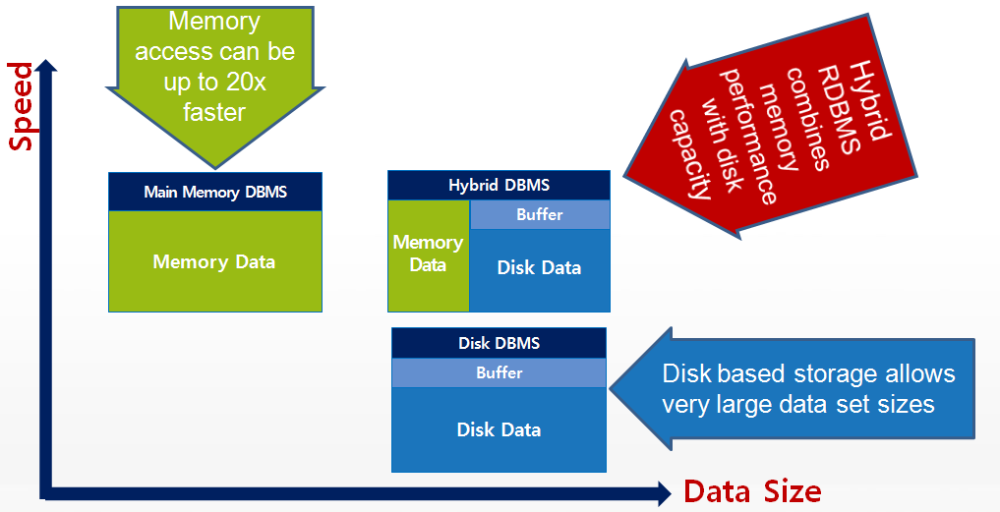
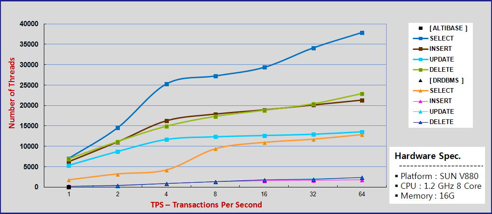

Correlation between Data Size and Speed

Due to extreme speed, user choose memory tablespace. (up to 20x faster than disk tablespace)
Relatively, the access speed of the disk tablespace is slower than one of the memory tablespaces.
To avoid the bottleneck in disk tablespace, ALTIBASE HDB utilizes Disk Buffer, used for buffer zone between disk and
memory area.
A disk buffer also belongs to the memory space in ALTIBASE HDB.
It was adopted to reduce the bottleneck in disk tablespace by locating data which resides in the disk tablespace, which is frequently accessed by a user or user applications.
Physical Performance Gap between ALTIBASE HDB and the chief disk-resident RDBMS

As shown in the chart above, the access speed to the ALTIBASE HDB(memory tablespace) is even faster than to the major disk resident
RDBMS.
In case of INSERT/UPDATE/DELETE operations, up to 14x faster than that.
Whereas in SELECT operation, approximately 5x faster than that. That's why select operation only fetches stored data without any modifications.
{kind=link}
{kind=link}
{kind=link}
{kind=link}
{kind=link}
{kind=link}
{kind=link}